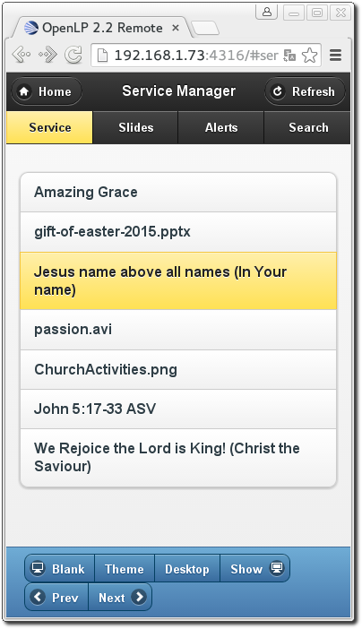
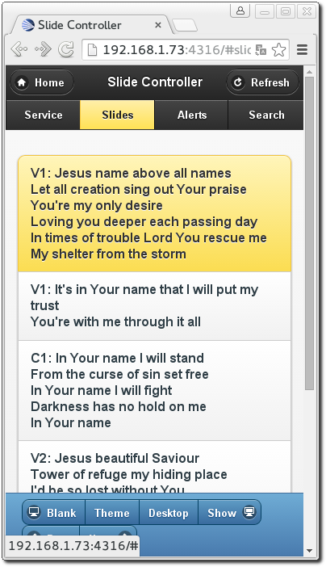
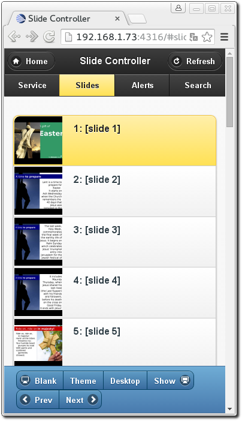
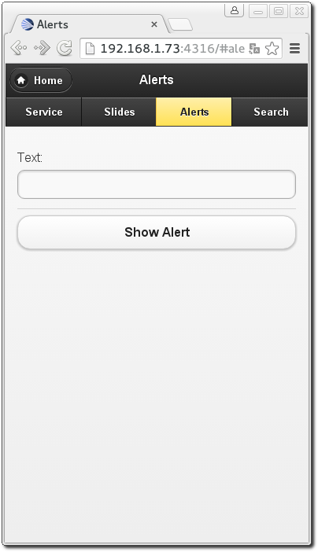
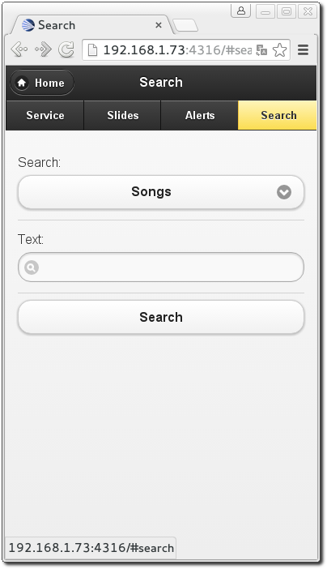
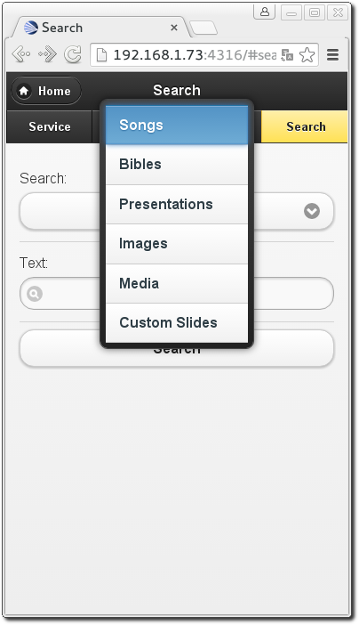
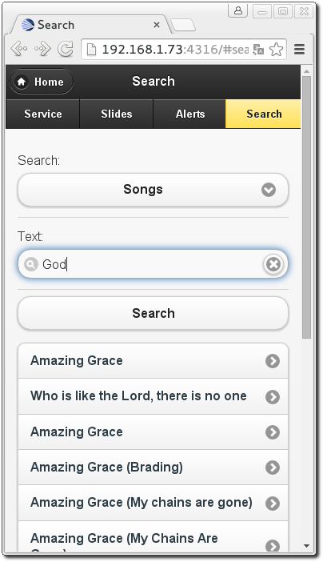
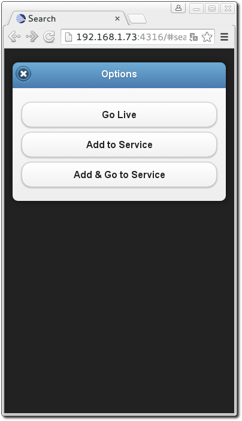

The Web Remote
OpenLP gives you the ability to control the Service Manager. You also have the ability to search for and add or display media from the Media Manager or send an Alert, using a remote computer, netbook or smartphone and a web browser. You can use the web remote to control the entire service away from the main computer or, have the nursery or daycare send an Alert message to the projection screen. This could also be used for a guest speaker or worship team leader to control their own slides if needed.
The first step is to make sure the Remote plugin is activated. You can accomplish this by following the instructions in the Plugin List. The second step is to configure the settings you will use with the web browser. You can find these instructions and settings in Remote.
Open a web browser, type in the Remote URL you found in Remote and
press the Enter key. For this example we will use
http://192.168.1.73:4316. You will then be presented with the home page of the
OpenLP Remote.
Service Manager
Clicking on Service Manager will display the service item list from the Service Manager.
Clicking on any item in the Service Manager will immediately take you to the Slide Controller.
You will find the following buttons throughout the web remote interface.
The home button is found on most of the pages in the top left hand corner of the remote interface and clicking it will take you back to the home page of the OpenLP remote.
When changes are made on the main computer clicking on refresh will show the changes in the remote viewer.
Clicking this button will blank the display on the projector screen. Clicking on an item in the Service Manager will automatically show the item on the screen.
Clicking this button will blank the display on the projector screen to the current theme. Note that this is not available for item which does not use themes, such as images, presentations and media. Clicking on an item in the Service Manager will automatically show the item on the screen.
Clicking this button will hide the display on the projector screen and therefore show the desktop. Clicking on an item in the Service Manager will automatically show the item on the screen.
If the screen is blanked, clicking on this button will unblank the display.
This button will move you upward through the Service Manager and Slide Controller.
This button will move you downward through the Service Manager and Slide Controller.
Note: The buttons Blank, Show, Prev and Next are conveniently located on the top and the bottom of the remote interface to help eliminate scrolling.
Slide Controller
After you click on an item in the Service Manager you will be taken to the Slide Controller interface.
You will find the verses displayed as they appear in the live view on the main computer and the first verse will be displayed on the projection screen. You can use the Prev, Next or click on each verse using the mouse to display them.
When the slides shown are either images or presentations a small thumbnail will be shown.
Note: The remote interface replicates the OpenLP software. When displaying images, clicking on a single image in the service manager will display it immediately. The first image in a group of images and the first slide in a presentation will also be displayed immediately when clicked on in the web remote service manager.
Alerts
You can send an alert to the projection screen by entering the text in the box and clicking on Show Alert. The alert will be displayed as you have it configured in Alerts.
Search
Using the search function gives you the ability to search for a particular media, add it to the service or display it immediately.
Clicking on Songs will display your media options to search through. Click on the media type that you want to search.
Enter the text you want to search for. You can click Search or press
Enter on the keyboard. If you do not enter any text to search for, you
will be presented with your entire list of media for the selected media.
Note: When searching Bibles media you must enter the exact name, chapter, verse or verses. Searching Songs will search titles and lyrics with the text used.
For this example we are searching “Songs” and the word “God”. The results will be displayed below the search button.
After finding the song you searched for, clicking on the song will bring up the next screen.
Click on Go Live to immediately display your media on the projection screen. Click on Add to Service to add your media to the bottom of the Service Manager. Click on Add & Go to Service to add your media to the bottom of the Service Manager, and go to the web remote service manager.